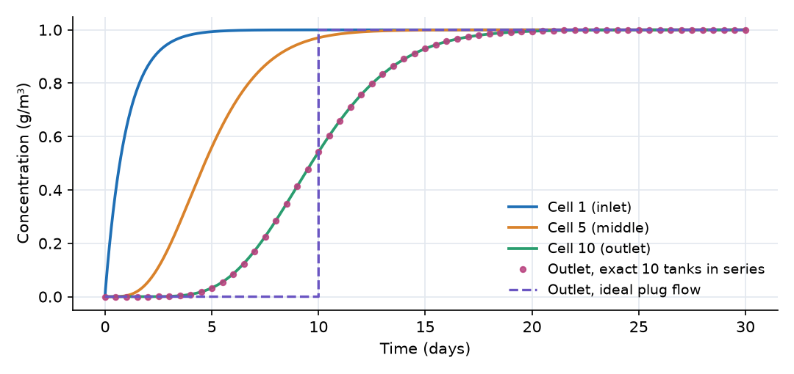

What this model represents
A plug-flow reactor (PFR) is the opposite idealization to a stirred tank: water moves along a channel or pipe as a train of slices that do not mix with each other, so everything that enters at one time leaves together exactly one residence time later. Chlorine contact tanks, long narrow basins, pipelines and stream reaches are often designed or analysed as plug flow.
A finite-volume model cannot represent a perfectly sharp front. OpenHydroQual's Plug flow reactor composite approximates it with ten completely mixed cells in series. This example applies a step input of tracer, compares the outlet response with the exact solution for ten tanks in series, and shows how far that is from ideal plug flow. It is also a first look at composite blocks: one object in the model file that expands into a group of blocks and links when the model is built.
How it works
The composite. The PFR line in the model file creates ten Reactor cells named PFR__R01 … PFR__R10 and nine Fixed flow links PFR__flow_01_02 … PFR__flow_09_10. The composite's properties are passed to its members: each cell receives a volume of length × area / 10 = 100 m³, and each internal link receives the composite's flow, 100 m³/day. Links drawn to the composite attach to its first cell, and links drawn from it leave from its last cell. The composite's flow must equal the Feed and Discharge flows; otherwise cells would fill or empty.
Mass balance of each cell. Each cell i is a stirred tank with volume V_c = 100 m³ receiving flow Q = 100 m³/day from cell i − 1:
dC_i/dt = (Q / V_c) · (C_(i−1) − C_i)
The link mass flux is advective, flow × concentration of the upstream cell. The dispersive part of the link flux, ((D·area + α·Q)/length) · (C_upstream − C_downstream), is zero because the tracer's diffusion coefficient D and dispersivity α are both zero. All the spreading seen in the results therefore comes from the discretization into mixed cells.
Exact solution. For a step input of concentration C₀ into N equal tanks in series with total residence time τ, the outlet concentration is
C_N(t) / C₀ = 1 − e^(−x) · Σ_(j=0)^(N−1) x^j / j!, with x = N·t / τ
With N = 10 and τ = 10 days this is tabulated in exact_outlet.csv. Ideal plug flow would give a sharp step from 0 to 1 at t = τ = 10 days, tabulated in ideal_plug_flow.csv.
Dispersion of the cell chain. The residence time distribution of N tanks in series has a mean of τ and a variance of τ²/N. A column with real longitudinal dispersion has, for weak dispersion, a variance of about 2τ²/Pe, where Pe = u·L/D_L is the Peclet number. Ten cells therefore behave like a channel with Pe ≈ 2N = 20, or a dispersion number D_L/(u·L) ≈ 0.05. This spreading is a property of the discretization (numerical dispersion), not of the physical system.
Time stepping. The run uses a fixed time step of 0.01 days (max_timestep_increase_factor = 1), small compared with the 1-day residence time of each cell.
What to look for in the results
- Agreement with theory. The outlet concentration follows the exact ten-tanks-in-series curve to within 0.002 g/m³ throughout.
- The front arrives on schedule but smeared. The outlet concentration passes 0.5 g/m³ at about 9.7 days, close to the 10-day residence time. Ideal plug flow would jump from 0 to 1 at exactly 10 days. In the cell chain, the outlet already shows 3% of the inflow concentration at day 5, and only reaches 99.5% around day 20.
- Spreading grows with distance. Cell 1 responds like a single stirred tank (63% after 1 day). Cell 5 behaves like five tanks in series with a 5-day residence time, and its front is visibly sharper relative to its arrival time than cell 1's. The relative spread, 1/√N, decreases as the front moves downstream.
- Constant volumes. Every cell keeps exactly 100 m³, because all links carry the same 100 m³/day.
Assumptions and limitations
- The composite always uses ten cells. A sharper front, closer to ideal plug flow, needs more cells, which means replacing the composite with an explicit, longer chain of Reactor blocks and links. Conversely, ten cells is a reasonable choice when the real reactor has a dispersion number near 0.05.
- Physical dispersion, if added through the constituent's dispersivity, adds to the numerical dispersion of the cell chain.
- Flow is steady and the cross section uniform. The tracer is conservative and the reactor starts clean.
- The Influent tank is a convenient constant-concentration source. Its concentration stays at exactly 1 g/m³ because nothing enters it.
Model diagram
Hover a block or link to see its name and type. Arrows show the positive flow direction.
Components
Click a component to see every property set in the model file, with units and meaning.
Blocks 2
Storage compartments: each holds water (and dissolved or particulate mass) and has a state that evolves in time.
InfluentReactor · mass_transferA very large feed tank (10⁶ m³) holding water at a tracer concentration of 1 g/m³. Over the 30-day run it loses only 0.3% of its volume, so it acts as a constant-concentration source.
Reactor: Reactor
| Property | Value | Unit | Meaning |
|---|---|---|---|
| Initial Storage | 1000000 | m3 | |
| Tracer: Concentration | 1 | g/m3 | Computed as mass/(Storage+0.00001) |
| Bottom elevation | 0 | m | |
| Constant Inflow | 0 | m3/day |
EffluentReactor · mass_transferA collection tank, initially empty, that receives the reactor outflow.
Reactor: Reactor
| Property | Value | Unit | Meaning |
|---|---|---|---|
| Initial Storage | 0 | m3 | |
| Tracer: Concentration | 0 | g/m3 | Computed as mass/(Storage+0.00001) |
| Bottom elevation | 0 | m | |
| Constant Inflow | 0 | m3/day |
Composite blocks 1
Pre-assembled groups of blocks and links that behave as a single unit.
PFRPlug flow reactor · mass_transferA 'Plug flow reactor' composite block: a flow path 100 m long with a 10 m² cross section (1,000 m³), carrying 100 m³/day. It expands into ten 100 m³ Reactor cells, PFR__R01 to PFR__R10, joined by nine internal Fixed flow links of 100 m³/day. Hydraulic residence time 10 days, 1 day per cell.
Plug flow reactor: A plug-flow reactor represented as ten equally sized, completely mixed reactors in series joined by fixed-flow links. Influent attaches to the first reactor and effluent leaves the last one, both through ordinary 'Fixed flow' links, so a link drawn into the unit enters at its head and a link drawn out of it leaves at its tail. The reach volume is length*area and is divided equally among the ten reactors; the hydraulic residence time of the whole unit is therefore length*area/flow and that of each reactor is one tenth of it. Ten tanks in series reproduce a residence-time distribution with a dimensionless variance of 0.1 about the mean, which is the amount of numerical dispersion this discretisation carries; a sharper front requires more tanks, which means ungrouping the unit and extending the chain by hand. Constituents and reactions added to the model are shared by all ten reactors.
| Property | Value | Unit | Meaning |
|---|---|---|---|
| Tracer: Concentration | 0 | g/m3 | Computed as mass/(Storage+0.00001) |
| Cross-sectional area of the reactor | 10 | m2 | Area of the section perpendicular to the flow direction. The volume of each of the ten reactors is length*area/10. |
| Bottom elevation | 0 | m | Elevation of the reactor floor, applied identically to all ten reactors. Model a sloping reach by ungrouping the unit and setting the elevations individually. |
| Flow rate through the reactor | 100 | m3/day | Throughflow carried by each of the nine internal connectors. It must match the flow of the external links attached to the two ends, otherwise the reactors fill or empty. The hydraulic residence time of the unit is length*area/flow. |
| Length of the reactor | 100 | m | Length of the flow path. Together with the cross-sectional area it sets the total volume, which is split equally among the ten reactors. The volume mappings are hosted here, but they are re-evaluated whenever any group property changes, so editing the area updates them too. |
Links 2
Connections that move water (and the mass it carries) between blocks.
FeedFixed flow · mass_transferFixed flow of 100 m³/day from Influent into the first cell of the PFR.
Fixed flow: Fixed flow
| Property | Value | Unit | Meaning |
|---|---|---|---|
| Flow rate | 100 | m3/day |
DischargeFixed flow · mass_transferFixed flow of 100 m³/day from the last cell of the PFR to the Effluent tank.
Fixed flow: Fixed flow
| Property | Value | Unit | Meaning |
|---|---|---|---|
| Flow rate | 100 | m3/day |
Constituents 1
Substances or particles carried by the water.
TracerConstituentA conservative dissolved substance. It enters at 1 g/m³ from t = 0; the reactor initially holds clean water.
Constituent: Chemical constituent
| Property | Value | Unit | Meaning |
|---|---|---|---|
| Concentration | 0 | g/m3 | Computed as mass/(Storage+0.00001) |
| Constant Inflow concentration | 0 | g/m3 | |
| Diffusion Coefficient | 0 | m2/s | |
| Dispersivity | 0 | m | |
| Stoichiometric Constant | 0 |
Input files
exact_outlet.csv | |
ideal_plug_flow.csv |
Simulation settings
| Start time | 0 |
| End time | 30 |
| Initial time step | 0.01 |
| Write interval (steps) | 10 |
Results
Produced by running the downloaded model unchanged.
